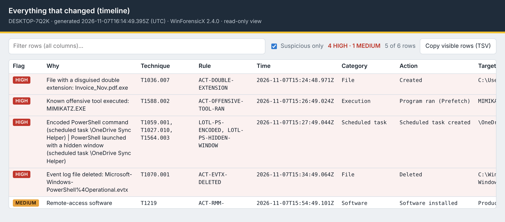

WinForensicX field guide
A read-only toolkit for looking inside a Windows computer: what is running, what persists, what changed, and which of it looks like an attacker. It changes nothing on the machine and sends nothing anywhere.
- Extract the whole archiveKeep the folder structure. Optionally compare the files with
SHA256SUMS.txt. - Open PowerShell as administratorStart, type PowerShell, choose Run as administrator. Without it the tool still runs, with less to see.
- Start the menuChange to the extracted folder and run the launcher. Everything else is a key press away.
PS C:\> cd "$HOME\Downloads\WinForensicX-{{VERSION}}" PS …\WinForensicX-{{VERSION}}> .\Start-WinForensicX.ps1 WinForensicX v{{VERSION}} · read-only DFIR toolkit Host PC-0412 · elevated · output E:\cases ── Main menu ────────────────────────────────── 1 Investigate this computer triage and report 2 Explore this computer 53 live views 3 Hunt & analyze IOCs, files, payloads 4 Cases & evidence reports, verify 5 Live monitor 6 Settings H Help & guide Q Quit Choose: _
If PowerShell refuses to run it
| The message says | Do this |
|---|---|
| running scripts is disabled | Run Set-ExecutionPolicy -Scope Process -ExecutionPolicy Bypass, then start it again. It applies to this window only and ends when you close it. |
| is not digitally signed | The files still carry the downloaded-from-the-Internet mark. After checking the hashes, run Get-ChildItem -Recurse | Unblock-File in the folder, or use the command above. |
| A window flashes and closes | That is Explorer's right-click Run with PowerShell. It asks to change the execution policy with No as the default, never runs as administrator, and closes on any refusal. Start from a PowerShell window instead. |
Find your way
Every task in this guide is labelled with the keys that reach it, like 2›1›1: Explore, Recent changes, Everything that changed. B goes back one level and Q quits from anywhere.
| Key | Menu | Use it to |
|---|---|---|
| 1 | Investigate | Run a quick or full triage of this computer, collect evidence only, triage remote computers over WinRM, analyze exported .evtx logs, or re-analyze a saved case. Produces the HTML report. |
| 2 | Explore | Browse 53 live views in eight groups, from Recent changes to Security posture. Suspicious rows are flagged. A exports every view into one hashed inventory report. |
| 3 | Hunt & analyze | Sweep for IOCs, triage a file or a whole folder, decode encoded commands, and take or compare a file-integrity baseline. |
| 4 | Cases & evidence | Open a report or case folder, verify a case against its manifest, export a UTC timeline, compare two cases. |
| 5 | Live monitor | Take a baseline, then report new suspicious processes, connections and beacons as they appear. |
| 6 | Settings | Output folder, look-back windows, allowlist file and custom rule folder for this session. |
Inside any view: S shows suspicious rows only, F filters by text, L lists every column, G opens the view as a sortable page in your browser, E saves it as CSV and R refreshes it.
Read the flags
Views that can show attacker activity check every row against the same rules the triage report uses. A flagged row gets four extra columns.
| Column | Meaning |
|---|---|
| Flag | The highest severity among the rules the row matched. |
| Why | Each reason in plain words, separated by |. The console shows the first reason and how many more there are. |
| Technique | MITRE ATT&CK technique IDs for the reasons. |
| Rule | The triage rule ID, for the allowlist. Shown in the browser page and the CSV. |
| Flag | What it usually means | What to do |
|---|---|---|
| CRITICAL HIGH | A pattern attackers use and normal software rarely does: an encoded PowerShell launch, a known credential-theft tool, a deleted event log, a disguised double extension. | Stop and look now. Note the time, keep the evidence, check what happened around it. |
| MEDIUM | Suspicious in context: remote-access software, a new local account, a program running from AppData, an exposed port. | Confirm with the owner of the machine whether it is expected. |
| LOW | Worth a glance: a Windows binary that can proxy execution, an executable in Downloads, a static hosts entry. | Review if it fits the timeline you are building. |
Some findings are about many rows at once. A burst of 300 deletions or renames in ten minutes appears above the table as a pattern, because no single row shows it.
A flag is a lead, not a verdict. The opposite also holds: a view with no flags does not mean the computer is clean, only that nothing visible in that view matched a rule. The Notes under each view say what could not be seen, for example without administrator rights.
Silence a known-good flag
Copy the Rule value from the browser page or CSV into an allowlist file, give the reason, and load it with 6›4. Triage and the views then suppress it; the report still lists suppressed findings with your reason.
[
{ "Id": "NET-LISTENER-EXPOSED", "Entity": "listen:8080:java*", "Host": "BUILD-*",
"Reason": "Build servers run Jenkins on 8080 (CHG-1042)" }
]
Flags raised by view-specific checks, such as a cleared Security log or a hosts-file override, have no rule ID and are always shown.
Investigations
Seven situations investigators and CTF players meet most, each with the keys to press and what to look at first. The sample output is synthetic, produced by this version of the tool from planted test data.
Is this PC compromised? 1›1
A user reports odd behaviour, an alert fired, or you are asked to clear a machine.
- Run a quick triage. It collects processes, network, autostarts, recent events and security posture, and takes one to five minutes.
- Open the report with 4›1. Start with the verdict and the start here list, then the findings grouped by category.
- Read the gaps section before you conclude anything. No process auditing and no Sysmon means much was simply not visible.
For evidence work, set the output folder to external media first with 6›1. Choose 1›2 for a full triage that also looks for web shells, dropped files, ransomware notes and exposed secrets.
Then: open the Recent changes timeline for the hours around the first finding.
What changed in the last hour? 2›1›1
You know roughly when something happened and want everything that changed around it, in one list.
The combined timeline merges registry writes in persistence and security keys, installs, services, scheduled tasks, accounts, firewall and Defender changes, program executions, connections and deletions. Set a shorter look-back with 6›3.
── Explore › Everything that changed recently (combined timeline) ── Suspicious: 4 HIGH · 1 MEDIUM (S = show only these) Flag Why Time Action Target ---- --- ---- ------ ------ HIGH File with a disguised double extension: Invoi… 2026-11-07T14:02:11Z Created C:\Users\analyst\Downloads\Invoice_Nov.pdf.exe HIGH Known offensive tool executed: MIMIKATZ.EXE 2026-11-07T14:04:11Z Program ran (Prefetch) MIMIKATZ.EXE HIGH Encoded PowerShell command (scheduled task… (+1) 2026-11-07T14:05:11Z Scheduled task created \OneDrive Sync Helper HIGH Event log file deleted: Microsoft-Windows-Power… 2026-11-07T14:12:11Z Deleted C:\Windows\System32\winevt\Logs\…Operational.evtx - 2026-11-07T14:22:11Z Content extended C:\Users\analyst\Documents\Q3 budget.xlsx MEDIUM Remote-access software installed: anydesk 2026-11-07T14:32:11Z Software installed Product: AnyDesk -- Installation completed… 6 row(s). S Show suspicious rows only 4 HIGH · 1 MEDIUM G Open in browser (sort, filter, copy)
Press S to hide everything that matched no rule, and G to open the view as a page you can sort, filter and copy from. The page works offline and treats every value as plain text, so a hostile file name cannot run script in it.

Then: for a flagged program, triage the file itself with 3›3; for a flagged task or service, open 2›5 Persistence.
Something was deleted 2›1›4
A file or folder is missing, or you suspect someone cleaned up after themselves.
- Deleted files reads the Recycle Bin of every fixed drive: original path, deletion time, owner, size, and whether the content is still recoverable, with its exact location. With Sysmon installed it adds deletions logged by events 23 and 26.
- File system changes 2›1›3 reads the NTFS change journal and needs administrator rights. It shows files created, deleted, overwritten, renamed and moved, and recognises a move into the Recycle Bin as a deletion with its original path.
- Watch for flags on deleted event logs, deleted PowerShell history, short-lived executables and bursts of deletions.
The change journal keeps a limited history, often hours to a few days on a busy system drive. The view tells you where its readable window starts.
Then: copy a recoverable item out of the $Recycle.Bin path shown, and hash it with 3›3.
A suspicious file or command 3›3
An attachment, a download, a binary in AppData, or a long Base64 command line in a log.
File triage reports hashes, the real file type against its extension, entropy, the download URL from the Mark of the Web, alternate data streams, the signature, PE facts and printable strings with any IOCs in them. The file is only read, never run. 3›4 does the same for a whole folder as one table.
For a command line, 3›5 peels -EncodedCommand, Base64, gzip and nested FromBase64String layers and shows each step. Nothing is executed.
PS> ConvertFrom-WfxEncodedCommand 'powershell -enc VwByAGkAdABlAC0ATwB1AHQAcAB1AHQAIAAnAGgAaQAnAA=='
Then: search for the hashes and indicators you found across the computer with 3›1.
Malware lab and CTF 3›6
You will run a sample, or solve a forensics challenge, and need to know exactly what it changed.
- Before the run, take a file-integrity baseline of the folders that matter, and collect evidence with 1›3.
- Optionally start the 5 live monitor, which reports new suspicious processes and connections as they appear.
- After the run, compare the files with 3›7: added, deleted, content changed, or only timestamps changed. Collect again and compare the two cases with 4›5 for new processes, autostarts, services, listeners and DNS names.
PS> New-WfxFileBaseline -Path C:\Users\lab\AppData, C:\ProgramData -OutputPath E:\bl\before.json PS> Compare-WfxFileBaseline -Baseline E:\bl\before.json | Where-Object Change -ne 'TimestampOnly'
Then: the Recent changes views show the registry, task and service side of the same run.
Sweep for known IOCs 3›1
You have hashes, IP addresses, domains or strings from a report or another host.
The hunt matches MD5, SHA-1 and SHA-256 hashes, exact IP addresses, domains with their subdomains, and strings against what it collects from the computer, event logs included. -FileScan also hashes files, and -HashProcesses hashes running programs. A text file with one indicator per line works as well as a typed list. 3›2 sweeps a saved case instead, without touching the live system.
PS> Invoke-WfxHunt -IocFile .\iocs.txt -FileScan PS> Invoke-WfxTriage -ComputerName srv01,srv02 -Credential (Get-Credential)
Then: for several machines, collect from each over WinRM with 1›4 and hunt in the saved cases.
Hand the case over 4›3
The work goes to a colleague, a lawyer, or a write-up.
- Verify the case: every file is re-hashed against
manifest.json, and any changed, missing or added file is reported. - Record the manifest's SHA-256, printed at the end of each run, somewhere outside the case folder. The manifest is not signed, so that recorded hash is what makes later tampering detectable.
- Export one UTC-sorted timeline with 4›4 for a spreadsheet or timeline tool.
PS> Test-WfxCase -Path E:\cases\WFX_PC-0412_20261107-140211Z PS> Export-WfxTimeline -InputPath E:\cases\WFX_PC-0412_20261107-140211Z -Format Csv
All live views
Every view under 2 Explore, with its keys. Views marked flagged check each row for suspicious activity. Views marked admin need an elevated window for complete results.
PowerShell commands
Everything in the menu is also a command, for scripts and remote sessions. Import the module with Import-Module .\WinForensicX\WinForensicX.psd1, or dot-source the single file dist\WinForensicX.ps1. Show-WfxHelp prints this list in the terminal.
The case folder
Each run writes one folder named after the host and the UTC start time, under the output folder you chose. Nothing is written anywhere else.